A curated library to ground our thought and struggle — from Islamic political theory to anti-colonial resistance and the question of Palestine.
Islamic Political Theory
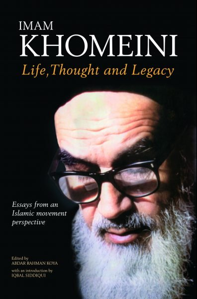
Imam Khomeini and Iran's 1979 Islamic Revolution had a lasting, transformative impact on the Muslim world and on relations between Islam and the West, with his influence continuing long after his death despite years of hostile media portrayal. This book aims to reintroduce readers to the life, ideas and historical significance of Imam Khomeini through selected articles, essays and reference material intended to help readers better understand modern Islamic political thought and recent history.
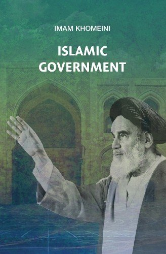
Based on a series of lectures by Imam Khomeini, this book — first published in 1970 — is perhaps the most influential document written in modern times in support of Islamic government. It presents the case for a government run in accordance with Islamic laws, and argues that this can only happen through the leadership of an Islamic jurist, a faqīh, who must provide political "guardianship" (wilayah) over the people. Following the Islamic Revolution, this concept was used as a model to build the framework of Iran's Islamic government and incorporated into its Constitution.
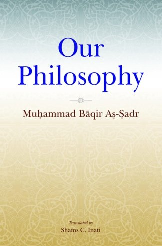
Our Philosophy is a structured exploration of how humans understand knowledge and the world, beginning with a defence of reason as the basis of true knowledge and then moving into broader philosophical questions. The book's main focus is on competing worldviews, philosophical systems, dialectical materialism, causality, the relationship between matter and God, and the problem of knowledge.
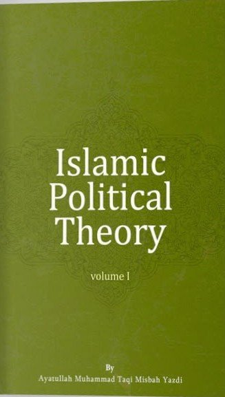
A government is a natural and necessary part of human society, not only to maintain order and protect rights but also, in an Islamic framework, to guide humanity toward both material well-being and spiritual growth. This book presents wilayah al-faqih as the legitimate model of Islamic government during the Imam's occultation, connects its modern political expression to the Iranian Revolution, and explains the theory in response to contemporary intellectual and political challenges.
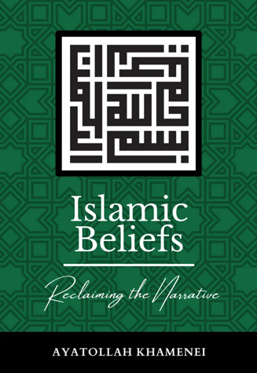
A Qur'an-centred book that presents Islam as a complete and integrated worldview shaping belief, action, morality and social order. Based on lectures delivered in pre-revolutionary Iran, it offers a serious and compelling exploration of faith, divine unity, prophethood and authority, making it a valuable introduction for anyone seeking a deeper understanding of Islam.
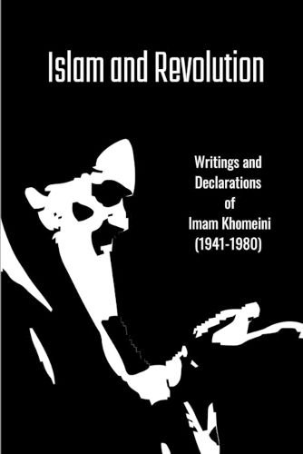
This anthology brings together Imam Khomeini's lectures on Islamic Government, a chronological selection of speeches and declarations tracing the course of the Islamic Revolution, two interviews, and texts reflecting his concern with moral purification and spiritual realisation, along with an appendix of significant legal rulings. Together, these materials explore his political thought, revolutionary leadership and broader religious and ethical vision.
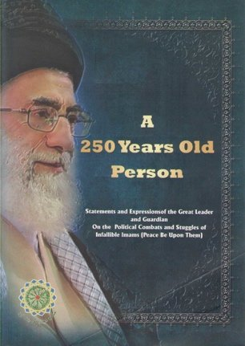
A collection of Ali Khamenei's lectures and writings that presents the political and social struggles of the Prophet Muhammad and the Imams as one continuous 250-year movement defined by shared purpose, struggle and leadership. Spanning from the Prophet's time to the Minor Occultation, it examines their different methods of leadership while arguing that they all pursued a common spiritual and political mission. Organised into 17 sections, it also considers the historical, political and social conditions surrounding the Imams.
Foundational Political Theory
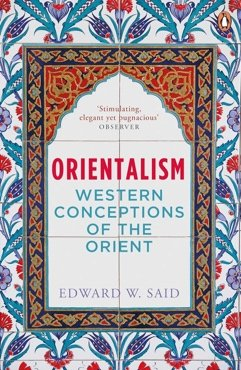
A landmark work in which Edward Said critiques Western depictions of the East and shows how they were shaped by prejudice, imperialism and the desire to dominate. It offers a powerful reflection on the relationship between knowledge, culture and power.
A powerful exploration of how racism and colonialism shape identity, self-perception and the human psyche. Blending personal reflection with psychological and historical analysis, the book examines the pressures of assimilation and the deep wounds created by living under colonial domination.
Fanon examines the destructive effects of colonial domination and the struggle for liberation that follows it. Blending political theory, psychological insight and anti-colonial critique, it reflects on violence, national culture and the challenges of building a free postcolonial society. It presents decolonisation as a profound and often violent process through which oppressed peoples seek to reclaim dignity, identity and freedom, while also considering how liberation movements arise, how national culture is formed, and what is required to overcome the lasting damage of empire.
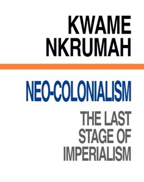
Nkrumah's examination of how colonial powers continue to exert economic and political influence over nations despite their formal independence. The book explores the mechanisms of neo-colonial control, including foreign aid, multinational corporations, international financial institutions, unequal trade relationships and political interference. Through an analysis of Africa's economic resources and its continued dependence on foreign powers, Nkrumah argues that political independence alone is insufficient without genuine economic sovereignty.
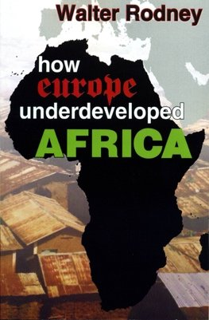
Rodney examines the political and economic forces that led to Africa's underdevelopment, showing how European colonialism and capitalism enriched Europe at Africa's expense. He argues that Africa's condition is not accidental or natural, but the direct result of centuries of exploitation through slavery, colonial rule and imperial domination. Drawing on historical and economic analysis, Rodney highlights how resources, labour and wealth were systematically extracted from the continent, shaping global inequality and leaving lasting effects into the present.
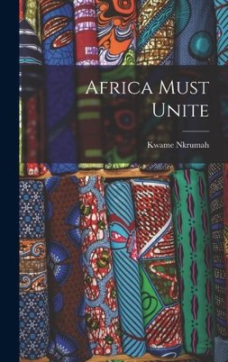
An examination of Pan-Africanism and the necessity of African unity in overcoming the lasting effects of colonialism and imperialism. Drawing on Africa's colonial history, the struggle for independence and his own experiences as Ghana's first president, Nkrumah explores how political fragmentation, economic dependency and foreign interference threaten the sovereignty of newly independent African nations. He argues that genuine liberation requires political and economic integration across the continent — a united African government, coordinated economic planning, a common foreign policy and collective defence.
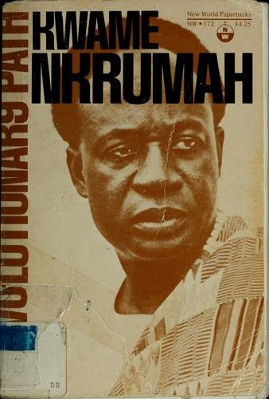
In Revolutionary Path, Kwame Nkrumah's key writings and speeches are brought together to trace his evolving ideas on revolution, Pan-Africanism and socialism. The book captures his lifelong dedication to the liberation of Africa and the fight against imperialism and injustice worldwide.
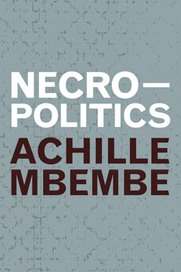
Mbembe's influential work examining how modern power operates through the control of life and death, particularly in contexts shaped by colonialism, racism and war. The book argues that contemporary forms of sovereignty increasingly rely on exclusion, violence and the creation of "death worlds," while critiquing the darker side of democracy and exploring possibilities for more humane futures.
Resistance in all Forms
Captures Malcolm X's powerful message on civil rights, self-determination and resistance to oppression. Centred on his famous phrase, the book presents his argument that freedom, dignity and equality must be pursued with uncompromising resolve, highlighting his critique of racial injustice while emphasising self-defence, empowerment and the need to confront oppression directly.
Che Guevara's practical guide to revolutionary struggle, drawing on his experiences in the Cuban Revolution to outline the principles, tactics and conditions needed for insurgent movements to succeed. Combining military strategy with political theory, it emphasises popular support, adaptability and discipline, presenting the guerrilla fighter as both a combatant and an agent of social transformation.
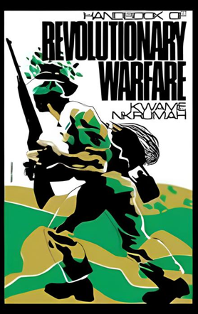
Nkrumah's examination of the political and military dimensions of Africa's struggle for liberation. Divided into two main parts, the book first analyses imperialism and neo-colonialism before exploring revolutionary strategy, guerrilla warfare and political organisation. Throughout, Nkrumah emphasises coordinated resistance, popular mobilisation and Pan-African unity in achieving lasting freedom from foreign domination.
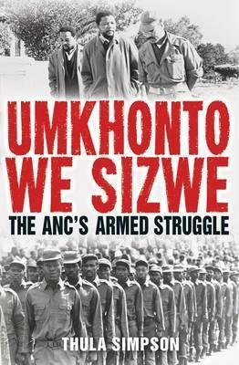
A comprehensive historical account of the ANC's armed resistance against South Africa's apartheid regime. Tracing the liberation struggle from its origins in the 1950s to Nelson Mandela's election as president in 1994, the book examines the formation and development of Umkhonto we Sizwe (MK), the ANC's military wing, alongside its guerrilla campaigns, political strategies and international networks of support. Drawing on previously unpublished accounts and testimonies, Simpson explores the experiences of revolutionary leaders and ordinary fighters alike.
Said's examination of the relationship between Western culture and imperial power, exploring how literature, art and cultural narratives both reflected and reinforced colonial domination. Building on the arguments presented in Orientalism, Said analyses influential Western literary works to demonstrate how cultural representations helped legitimise imperial expansion, shape perceptions of colonised peoples and sustain unequal power structures. The book also explores the cultural resistance of colonised societies.
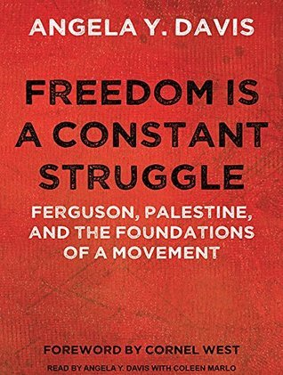
A collection of essays, speeches and interviews examining the interconnected struggles against racism, oppression and state violence across the world. Drawing on historical liberation movements, including the Black Freedom Movement and the struggle against apartheid in South Africa, Davis explores the relationship between contemporary movements for racial justice in the United States and Palestinian liberation. The book addresses Black feminism, intersectionality, mass incarceration, prison abolition and the enduring influence of colonialism.
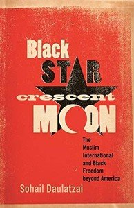
An examination of the historical, political and cultural connections between Black liberation movements in the United States and anti-colonial struggles across the Muslim world. Tracing these relationships from the 1950s through the Civil Rights Movement, the Black Power era and the War on Terror, the book explores how Black activists, intellectuals and artists drew inspiration from revolutionary movements in Africa, Asia and the Middle East — through figures such as Malcolm X and Muhammad Ali, and the influence of Islam on Black political thought, cinema and hip-hop.
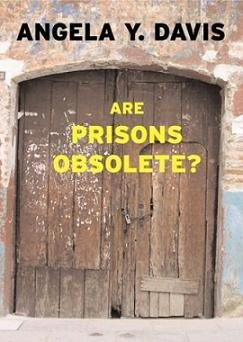
An examination of the history, purpose and consequences of imprisonment, challenging the assumption that prisons are a necessary and permanent feature of society. Tracing the development of the American prison system through its historical connections to slavery, racial segregation and convict leasing, Davis explores how incarceration has become intertwined with racism, economic exploitation and social inequality. Questioning whether prisons genuinely address crime or instead reinforce existing structures of oppression, she argues for abolitionist alternatives.
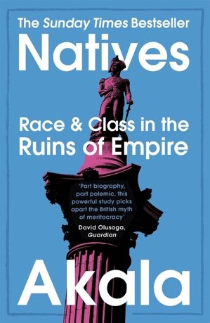
An examination of the relationship between race, class and the enduring legacy of British colonialism and imperialism. Combining personal experiences of growing up as a mixed-race, working-class young man in Britain with historical and political analysis, Akala explores how racism, economic inequality and social privilege continue to shape British society. The book examines institutional racism, education, policing, identity and representation, tracing their connections to slavery and colonial exploitation.
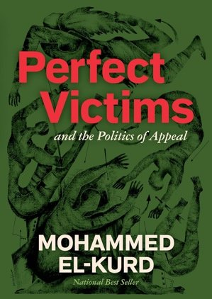
An examination of the representation, dehumanisation and political struggles of Palestinians, challenging the expectation that oppressed peoples must demonstrate innocence, helplessness and moral perfection to be considered deserving of sympathy and justice. El-Kurd explores how Western media, political institutions and dominant narratives shape perceptions of Palestine, often reducing Palestinians to passive victims while overlooking their agency, resistance and demands for self-determination.
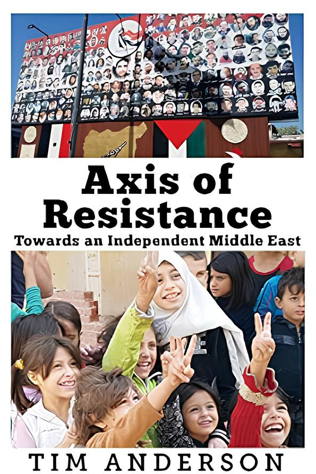
An examination of the political, military and ideological struggles shaping the Middle East, focusing on movements and states opposing Western intervention, Israeli policies and foreign domination in the region. Drawing on the conflicts in Syria, Palestine, Lebanon and the wider Middle East, Anderson explores the development of the Axis of Resistance, particularly the roles of Iran, Hezbollah and their regional allies in challenging US influence and advocating regional self-determination.
The question of Palestine
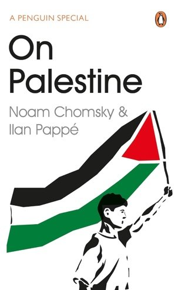
An examination of the historical, political and ideological dimensions of the Palestinian struggle for liberation and self-determination. Through a series of dialogues and essays, the authors explore the origins of Zionism, the Nakba of 1948, Israeli occupation, Palestinian displacement and the continuing impact of colonialism on the region. It also explores the Boycott, Divestment and Sanctions (BDS) movement, international solidarity, and the competing visions of one-state and two-state solutions.
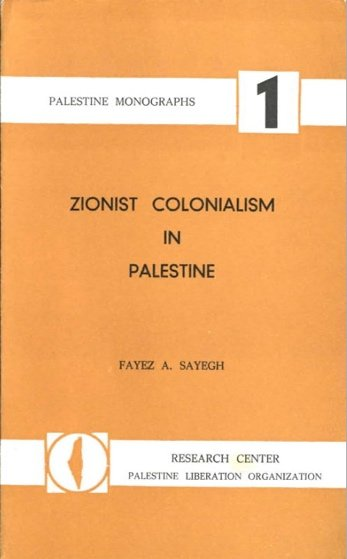
A historical and political examination of Zionism through the framework of settler colonialism, exploring its origins, development and consequences for the Palestinian people. Published in 1965, the book traces the emergence of the Zionist movement in the late nineteenth century, its alliance with British imperialism, and the political developments that led to the establishment of Israel in 1948. Drawing comparisons with anti-colonial movements across Africa and Asia, Sayegh situates the Palestinian cause within the global struggle against colonialism.
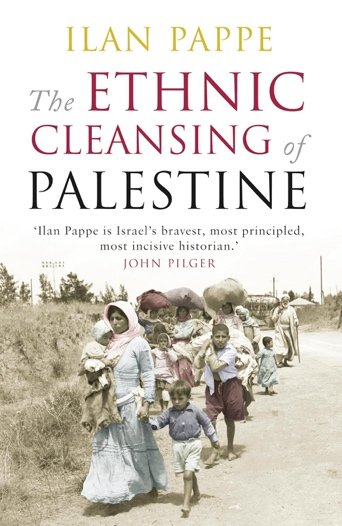
A historical examination of the events surrounding the establishment of Israel in 1948 and the mass displacement of Palestinians during what became known as the Nakba. Drawing on historical documents, declassified Israeli archives and eyewitness accounts, Pappé challenges conventional narratives of the 1948 war, arguing that the expulsion of Palestinians was not merely a consequence of war but part of a deliberate strategy. The book examines Plan Dalet, the destruction of Palestinian villages, and the enduring consequences of the Nakba.
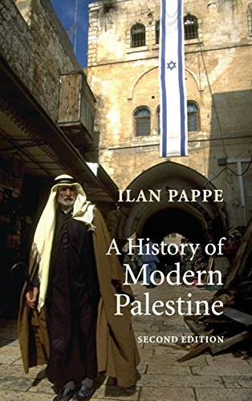
A comprehensive historical examination of Palestine, tracing its political, social and cultural transformation from Ottoman rule through the British Mandate, the establishment of Israel in 1948, and the subsequent decades of conflict and occupation. The book explores the emergence of Zionism and Palestinian nationalism, the Nakba, the Arab–Israeli wars, Palestinian uprisings, and the Oslo Accords. Moving beyond conventional narratives, Pappé places the experiences of ordinary Palestinians and Jews at the centre of his analysis.
A historical and political examination of the Palestinian struggle for identity, justice and national self-determination. Drawing on historical analysis, political commentary and his own experiences as a Palestinian intellectual, Said explores the origins of Zionism, the establishment of Israel in 1948, the displacement of Palestinians, and the continuing consequences of occupation and exile. He analyses how Western political discourse, media representations and dominant historical narratives have shaped international perceptions of the conflict.
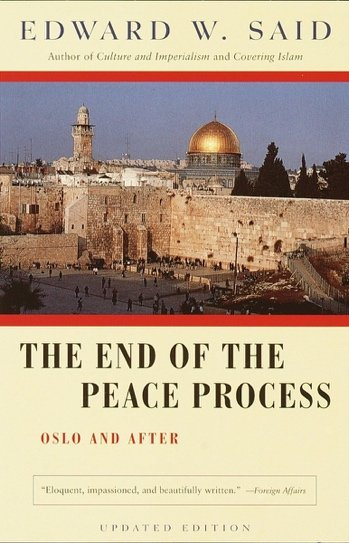
A collection of political essays examining the Israeli–Palestinian peace process following the signing of the Oslo Accords in 1993. Said critically examines the negotiations between Israel and the PLO, arguing that the agreements failed to address the fundamental issues of Palestinian self-determination, occupation and national sovereignty. The book explores the unequal balance of power between the negotiating parties, the continued expansion of Israeli settlements, and the influence of the United States in shaping diplomatic outcomes.
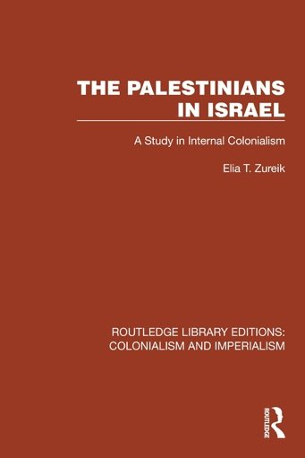
A sociological and political examination of the experiences of Palestinians who remained within the borders of Israel following its establishment in 1948. Drawing on historical research, sociological theory and an analysis of Israeli institutions, Zureik explores how Palestinians were transformed from a majority population in their homeland into a minority within the newly established state. Using the framework of internal colonialism, the book examines land dispossession, economic marginalisation, racial discrimination and political inequality.
A collection of poetry exploring the Palestinian experience of displacement, dispossession, resistance and the enduring struggle for liberation through the lens of personal and collective memory. Named after the author's late grandmother, Rifqa, whose life embodies generations of Palestinian resilience, the collection traces her forced displacement from Haifa during the Nakba of 1948 to the family's continuing struggle against dispossession in Sheikh Jarrah, occupied East Jerusalem.
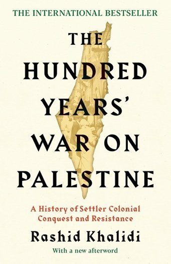
A history of settler colonialism and resistance, 1917–2017. Drawing on archival documents, historical research and his own family's experiences, Khalidi traces the conflict from the 1917 Balfour Declaration through the British Mandate, the Nakba of 1948, the 1967 war, the Israeli invasion of Lebanon in 1982, and subsequent Palestinian uprisings and peace negotiations. Khalidi argues that Palestinian history must be understood through the framework of settler colonialism and the involvement of major imperial powers.